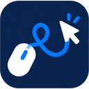

90+ languages
Guidance, labels and the whole window translate themselves. Spanish, Vietnamese, Tigrinya, Arabic (right to left) and more.
NextTap looks at the screen you're stuck on, circles the next button, and says it in your language. You tap. It checks. Done.
© 2026 NextTap.
Sources: U.S. Census Bureau 2024; Pew Research 2025; AARP; Gartner 2019 (dated). Applying AARP's 50+ figure to 65+ is an extrapolation. Statistics © their respective sources; selection and presentation © 2026 NextTap.
Type or speak, in any of 90+ languages. "Cancel my subscription." "Freeze my card."
NextTap asks permission before it reads a page. Passwords and card numbers are never seen. Nothing is kept after you close it.
The rest of the screen fades. One button stays bright inside a clean outline, with a short note in your language. NextTap never clicks for you, and re-reads the screen after every tap.
NextTap only says "done" when the screen proves it, like "Your card is frozen." If it isn't sure, it says so and points you to a person.
Premium · billed monthly
NextTap explains every step in the user's own language and shows the button's original name beside it, so they can match what they see and learn as they go.
Toque el botón «Cancelar» ("Cancel")
Nhấn nút «Hủy» ("Cancel")
اضغط على الزر «إلغاء» ("Cancel")
点击“取消”按钮 ("Cancel")
Illustrative examples of the guidance style. © 2026 NextTap.
Guidance, labels and the whole window translate themselves. Spanish, Vietnamese, Tigrinya, Arabic (right to left) and more.
Say what you want. Hear the next step at your own speed.
Nothing moves on a timer. Repeat any step, or wait for "Next step".
"I'm not sure which button this is" beats a confident wrong tap. Two unsure steps in a row bring up a human.
Pauses and warns on gift cards, remote-access software, new recipients and look-alike links.
Passwords, card numbers, emails and amounts are removed or masked before anything leaves the device. Press "What can NextTap see?" any time.
It stops by itself when the destination is reached or the proof appears on screen.
Familiar tasks run with zero AI calls. The AI checks in only when a screen looks different.
Same guidance engine. Pick how people meet it.
Demo and interface design © 2026 NextTap.
Banks, insurers, clinics and telecoms pay for every confused customer who calls. Adjust the plan's example. These are assumptions, not results.
Calculator and pricing model © 2026 NextTap.
Recorded guides freeze when the app changes. NextTap reads the live screen after every tap.
WalkMe guidance is authored and maintained by hand for each website or app it runs on. NextTap reads whatever screen is live, so there are no per-screen guides to build, and it speaks the user's own language.
Great at seeing screens, but the user must open another app and share their screen. NextTap is the "Show me how" button already inside the app, with the partner's own context.
Agents act for you. NextTap points and you tap, so people stay in control and learn.

20–50 of your customers. Agreed measures: tasks completed, time, errors, support contacts avoided, satisfaction. Free or low cost. A written agreement and your results at the end.
Request a pilot